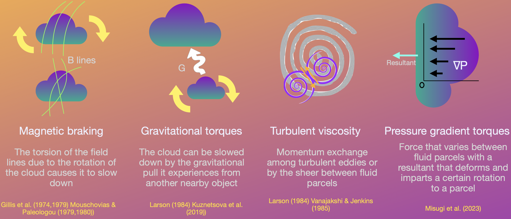
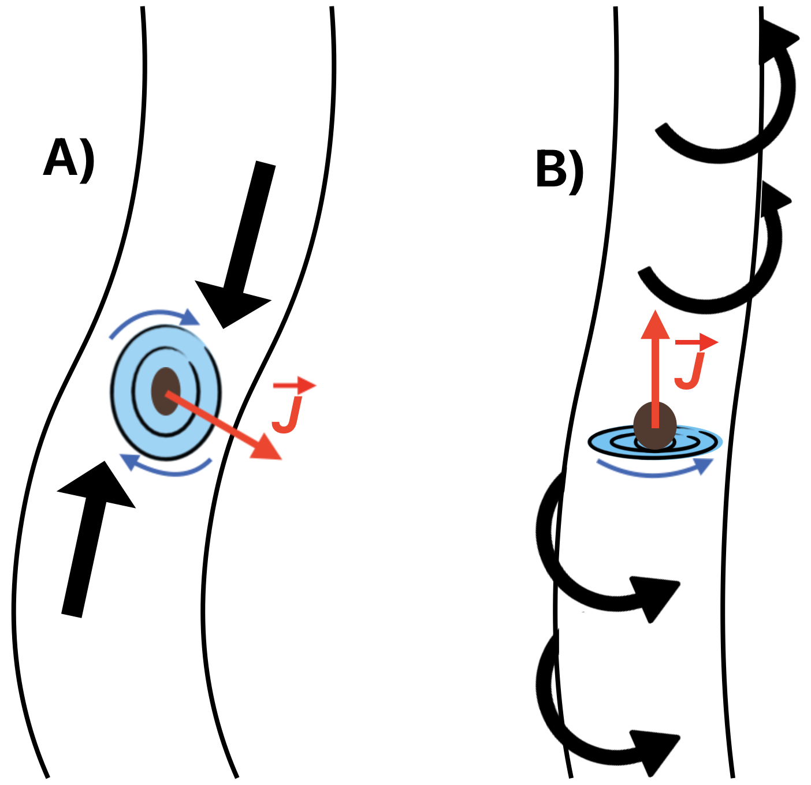
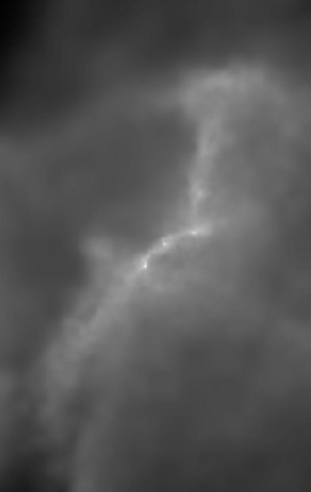

Angular Momentum Transport in Molecular Clouds

Active Torques in Molecular Clouds

Angular Momentum Transport in Filaments

Synthetic Observations




I study how filamentary structure, turbulence, gravity, and magnetic fields shape angular momentum acquisition and redistribution in star-forming environments.